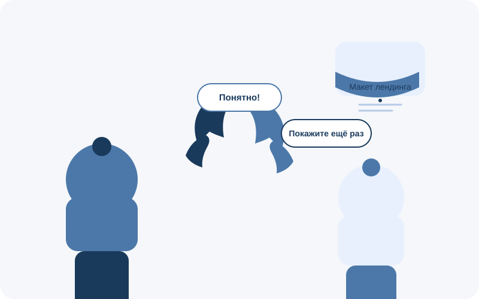
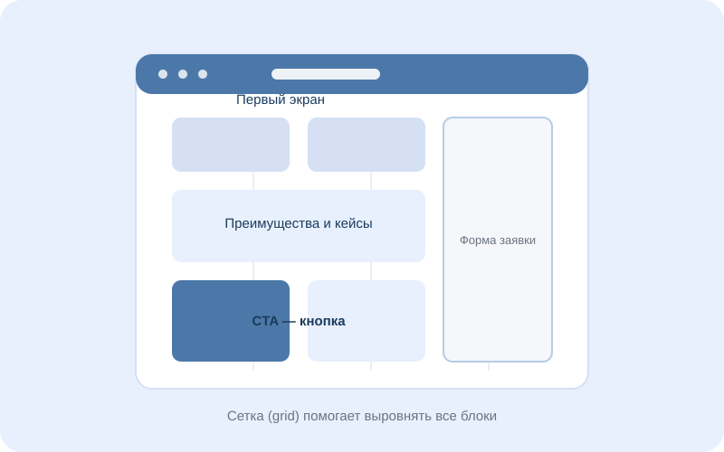
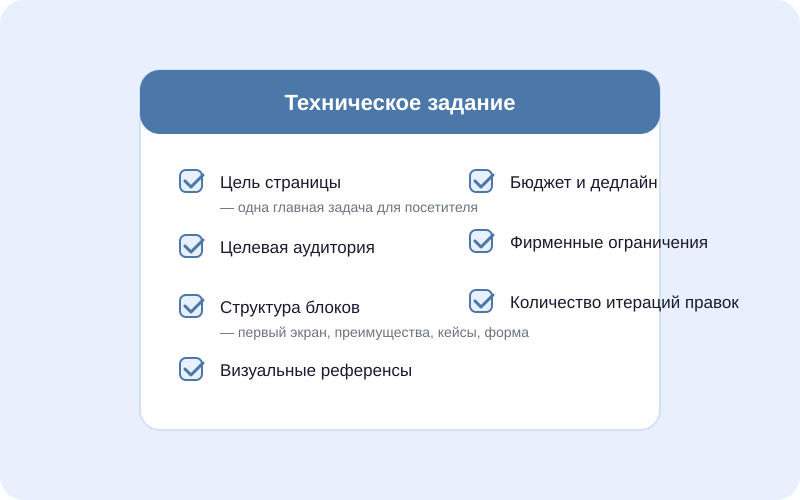
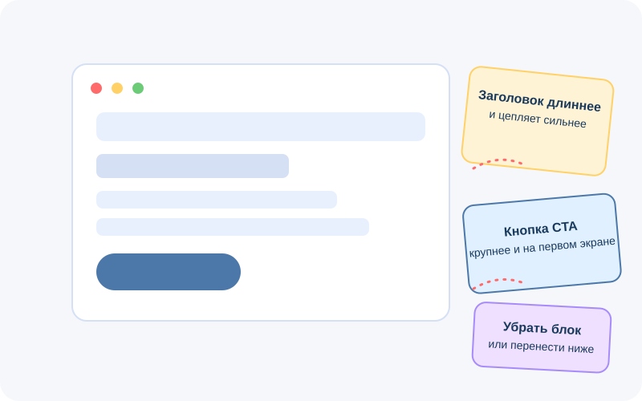

Вы открываете сайт студии, видите портфолио, мысленно представляете свой будущий лендинг… а потом начинается этап общения с исполнителем. И тут выясняется, что «сделать красиво» и «сделать конверсионно» — разные вещи, «мне не нравится» не считается правкой, а слово «адаптив» вообще звучит как заклинание.
Знакомо?
Эта статья — переводчик с дизайнерского на человеческий. Она поможет вам, даже если вы впервые заказываете дизайн сайтов, уверенно пройти путь от первого созвона до финального макета без стресса, недопониманий и бесконечных итераций.

Содержание
Почему возникает разрыв в коммуникации
Веб-дизайнер мыслит категориями сеток, визуальной иерархии, пользовательских сценариев. Заказчик мыслит категориями бизнеса: «мне нужно, чтобы клиент нажал кнопку и купил». Обе стороны правы, но говорят на разных языках.
Результат предсказуем:
- Дизайнер рисует «красиво», но не решает задачу.
- Клиент просит «поиграйте со шрифтами», хотя проблема в структуре.
- Проект затягивается на недели, бюджет растёт, обе стороны устали.
Хорошая новость: чтобы этого избежать, не нужно становиться дизайнером. Достаточно освоить базовый словарь и несколько принципов постановки задач.

Мини-словарь: 11 терминов, которые снимут 80% недопониманий
| Термин | Что значит простыми словами |
|---|---|
| UI-дизайн | Визуальная часть интерфейса: цвета, шрифты, кнопки, иконки — всё, что пользователь видит и с чем взаимодействует. |
| UX | Логика и удобство: куда пользователь кликает, в каком порядке видит информацию, где может «застрять». |
| Прототип | Черновой каркас будущего сайта без цветов и картинок. Показывает структуру блоков и логику переходов. |
| Мудборд | Коллаж из примеров, фотографий, шрифтов и цветовых палитр. Помогает зафиксировать настроение до начала работы. |
| Сетка (grid) | Невидимые направляющие, по которым выравниваются элементы. Делают макет аккуратным и «ровным». |
| Адаптив | Версии макета под разные экраны: десктоп, планшет, смартфон. Не «уменьшенная копия», а отдельная раскладка. |
| Первый экран сайта | То, что посетитель видит сразу после загрузки, без прокрутки. Критически важен для удержания внимания. |
| CTA (call to action) | Кнопка или призыв к действию: «Купить», «Оставить заявку», «Скачать прайс». |
| Фавикон | Маленькая иконка сайта во вкладке браузера. |
| Дизайн-система | Набор правил: какие цвета, шрифты, отступы и кнопки используются на всём сайте. |
| Правка vs. доработка | Правка — корректировка в рамках ТЗ. Доработка — новое требование, которое меняет объём работы. |
Сохраните эту таблицу. Она реально пригодится на созвоне с исполнителем.
Подготовка до первого созвона: 4 шага
Многие клиенты приходят к веб-дизайнеру с фразой: «Ну, мне нужен сайт, сделайте что-нибудь современное». Это нормально как стартовая точка, но чем конкретнее вы будете на этапе подготовки, тем точнее получите результат.
Шаг 1. Определите цель сайта
Не «хочу красивый сайт», а:
- собрать заявки на консультацию;
- продать конкретный курс;
- рассказать о новом продукте и получить предзаказы.
Одна цель = один главный CTA. Это влияет на весь веб-дизайн.
Шаг 2. Соберите примеры
Откройте 5–10 сайтов конкурентов или просто проектов, которые вам нравятся. Не обязательно в вашей нише. Запишите:
- что именно цепляет (цвет, анимация, подача текста);
- что категорически не нравится.
Это и есть заготовка для мудборда. Веб-дизайнер скажет вам спасибо.
Шаг 3. Подготовьте контент
Тексты, логотип, фотографии продукта, отзывы. Если текстов нет — обсудите, входит ли копирайтинг в проект. Но хотя бы тезисное описание каждого блока должно быть у вас на руках.
Шаг 4. Определите рамки
Бюджет, дедлайн, обязательные требования (например, интеграция с CRM, определённый шрифт из брендбука). Чем раньше вы озвучите ограничения, тем меньше сюрпризов на финише.

Как составить ТЗ, если вы не знаете, чего хотите
Парадокс: большинство заказчиков дизайна сайтов не могут сформулировать ТЗ, потому что не знают, как должен выглядеть процесс. Вот упрощённая структура, которую можно скопировать и заполнить:
1. О проекте. Что за бизнес, какой продукт/услугу продаём, кто целевая аудитория.
2. Цель страницы. Одно главное действие, которое должен совершить посетитель.
3. Структура блоков. Хотя бы в виде списка: первый экран → преимущества → кейсы → тарифы → FAQ → форма заявки. Не знаете порядок? Попросите дизайнера предложить — это его работа.
4. Визуальные ориентиры. Ссылки на примеры + 2–3 слова о настроении: «строгий и технологичный», «тёплый и рукодельный», «премиальный и минималистичный».
5. Технические требования. Адаптив, количество языковых версий, интеграции, особенности хостинга.
6. Ограничения. Фирменные цвета, которые нельзя менять; обязательные элементы (юридическая информация, логотипы партнёров).
Этого достаточно, чтобы веб-дизайнер начал работу и не ушёл в свободное плавание.
Как давать обратную связь и формулировать правки
Это, пожалуй, самая болезненная часть любого проекта. Несколько правил, которые сэкономят нервы обеим сторонам:
Говорите о задаче, а не о вкусе
❌ «Мне не нравится этот синий».
✅ «Наша аудитория — женщины 35–50 лет, сегмент премиум. Синий выглядит слишком корпоративно. Давайте попробуем что-то более мягкое».
Правки — списком, а не потоком
Соберите все замечания в один документ или сообщение. «Ещё одну мелочь поправьте» через три дня после того, как макет уже согласован, — это не мелочь, а новая итерация.
Разделяйте «не нравится» и «не решает задачу»
Первое — субъективно. Второе — аргумент для изменения UI-дизайна. Дизайнер не обязан угадывать ваш вкус, но обязан решить бизнес-задачу. Если вы объясняете, почему элемент не работает, исполнитель предложит решение.
Не просите «сделать три варианта на выбор»
Это размывает фокус. Лучше дать чёткий бриф и получить один сильный вариант, чем три компромиссных. Если сомневаетесь — попросите показать альтернативу для конкретного блока, а не для всей страницы.
Уважайте экспертизу
Если веб-дизайнер объясняет, почему крупный заголовок на первом экране сайта работает лучше мелкого, а десять кнопок подряд снижают конверсию, — скорее всего, он опирается на данные и опыт. Вы имеете право настоять, но сначала выслушайте аргументы.

5 типичных ошибок заказчика
- «Сделайте как у конкурента, только лучше». Копирование чужого дизайна не только неэтично, но и неэффективно: у конкурента другая аудитория, другой продукт, другая воронка.
- Отсутствие обратной связи в срок. Дизайнер ждёт три дня, потом получает лавину правок в пятницу вечером. Сроки сдвигаются, мотивация падает.
- Правки на этапе вёрстки. Когда дизайн согласован и началась вёрстка, изменение структуры блока — это не «подвинуть кнопку», а переделка кода. Все структурные вопросы решаются на этапе прототипа и макета.
- Дизайн без контента. Просить нарисовать дизайн сайтов, не имея текстов, — всё равно что шить костюм без мерок. В итоге блоки «примерные», а потом всё приходится переделывать под реальный текст.
- Слишком много лиц, принимающих решение. Когда правки вносят директор, маркетолог, жена директора и стажёр — результат предсказуем. Назначьте одного человека, который аккумулирует обратную связь.
Дизайнер не обязан угадывать ваш вкус, но обязан решить бизнес-задачу.
Чек-лист перед запуском проекта
Распечатайте или сохраните в заметки:
- Сформулирована одна главная цель страницы
- Собраны 5–10 визуальных референсов
- Подготовлены тексты (хотя бы тезисно)
- Определены бюджет и дедлайн
- Назначен один человек для коммуникации с дизайнером
- Согласованы этапы: прототип → дизайн → правки → передача макетов
- Обсуждено количество включённых итераций правок
- Уточнено, входит ли адаптив (мобильная версия) в стоимость
Если хотя бы один пункт вызывает затруднение — это нормально. Хороший веб-дизайнер поможет заполнить пробелы на этапе брифа. Не бойтесь задавать вопросы: исполнитель, который раздражается от уточнений, скорее всего, не ваш исполнитель.
Вместо заключения
Веб-дизайн — это не магия и не искусство ради искусства. Это инструмент, который решает конкретную бизнес-задачу: продать, собрать заявку, объяснить, вызвать доверие. И чем понятнее вы объясните эту задачу, тем точнее будет результат.
Вам не нужно разбираться в типографике, знать отличия Figma от Sketch или уметь двигать пиксели. Достаточно понимать базовые термины, чётко формулировать цель и давать обратную связь по делу.
А всё остальное — сетки, цвета, анимации, тот самый первый экран сайта, который за три секунды убеждает посетителя остаться, — доверьте профессионалу. В конце концов, именно для этого вы и ищете веб-дизайнера.